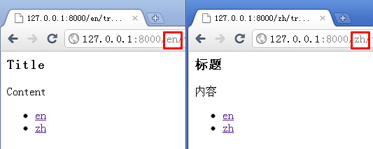

Django多语言翻译轻量解决方案
Django自带的多语言方案过于笨重，各种繁琐的设置之后，还要创建编辑po文件，编译成mo文件。Django本来就是一个很适合敏捷开发的框架，在翻译问题这么折腾就太不Pythonic了。本文介绍使用localeurl和mothertongue来实现多语言支持，通过localurl实现URL的语言前缀，通过mothertougue来翻译相应的字段。
Install
安装localeurl和mothertongue模块
pip install django-mothertongue
在settings.py文件中开启i18n支持，app列表中添加localeurl和mothertongue
30 31 32 33 34 35 36 37 38 39 40 41 42 43 44 45 46 47 48 49 50 51 52 53 54 55 56 57 58 59 | TIME_ZONE = 'America/Chicago' #时区的选择没有影响语言的显示 USE_I18N = True #开启i18n支持，默认是开启的 ugettext = lambda s: s LANGUAGES = ( ('en', ugettext('en')), #不加url前缀时默认显示的语言 ('zh', ugettext('zh')), ) PREFIX_DEFAULT_LOCALE = True #见下文的说明 LOCALEURL_USE_ACCEPT_LANGUAGE = True MIDDLEWARE_CLASSES = ( #最好是加在middleware列表的第一行 'localeurl.middleware.LocaleURLMiddleware', ) INSTALLED_APPS = ( #添加localeurl和mothertongue 'localeurl', 'mothertongue', ) #添加必要的模板处理器 TEMPLATE_CONTEXT_PROCESSORS = ( 'django.core.context_processors.request', 'django.core.context_processors.i18n', "mothertongue.context_processors.router", "django.contrib.auth.context_processors.auth", ) |
PREFIX_DEFAULT_LOCALE是设定当使用默认语言(本例中是en，英语)时否显示url前缀，建议调试时设置为True。LOCALEURL_USE_ACCEPT_LANGUAGE设定是否使用header的Accept-Language，如果设置为True，程序会自动分析访客使用的语言，来显示相应的翻译结果。
Usage
本例将建立一个名为translate的应用，其中有Article这个models，里面包含title和content两个字段，在后台可以添加中英文两种语言：
首先修改models.py，需要建立两个class，将MothertongueModelTranslate作为参数传入第一个class，第二个class名是在第一个class名后加上Translation：
1 2 3 4 5 6 7 8 9 10 11 12 13 14 15 16 17 18 19 20 21 22 23 24 25 26 | from django.db import models from django.conf import settings from django.utils.translation import get_language, ugettext, ugettext_lazy as _ from mothertongue.models import MothertongueModelTranslate class Article(MothertongueModelTranslate): title = models.CharField(_('title'), max_length=16 ) content = models.TextField(_('content'), blank=True ) translations = models.ManyToManyField('ArticleTranslation', blank=True, verbose_name=_('translations')) translated_fields = ['title','content',] def __unicode__(self): return u'%s' % self.title class ArticleTranslation(models.Model): article_instance = models.ForeignKey('Article', verbose_name=_('article')) #在下拉菜单中就不会显示默认语言了 language = models.CharField(max_length=16, choices=settings.LANGUAGES[1:]) title = models.CharField(_('title'), max_length=16) content = models.TextField(_('content'), blank=True) def __unicode__(self): return u'%s' % self.language |
然后在admin.py里注册这个模块：
1 2 3 4 5 6 7 8 9 10 11 12 13 14 15 16 17 18 19 20 21 22 23 24 25 | from django.contrib import admin from django.conf import settings from dmyz.translate.models import Article, ArticleTranslation class ArticleTranslationInline(admin.StackedInline): model = ArticleTranslation extra = 1 #admin界面的翻译部分显示几个输入框 max_num = len(settings.LANGUAGES)-1 fieldsets = ( (None, { 'fields': ['language',] }), ('Translation', { 'fields': ['title','content'], 'classes': ['collapse',], }), ) class ArticleAdmin(admin.ModelAdmin): fields = ['title', 'content',] inlines = (ArticleTranslationInline,) admin.site.register(Article, ArticleAdmin) |
最后再把url和view设置好，调出数据进行显示，这步和django基本操作完全一样，没有什么需要特殊设置的，所以只把模板文件的代码放上来：
1 2 3 4 5 6 7 8 9 10 11 12 13 | <h3>{{article.title|safe}}</h3>
{{article.content|safe}}
{% if mothertongue_language_nav %}
<ul>
{% for item in mothertongue_language_nav %}
<li>
<a href="{{ item.url }}">{{ item.name }}</a>
</li>
{% endfor %}
</ul>
{% endif %} |
当用户通过不同url访问网站时，就会显示不同的语言了：

Epilogue
以上就是整个设置了，目前只能对数据库中的内容进行翻译，还不能翻译templates上的内容(或者我没有发现？)，但对于小项目来说也是足够了的。尝试调用google的翻译接口，对一些简单的单词进行翻译，在填入英文时自动翻译成中文，效果还不错。总之算是对于翻译另一个方案，如果各位有更优的做法欢迎留言=)


{kind=link}
已推荐至：http://simple-is-better.com/news/380